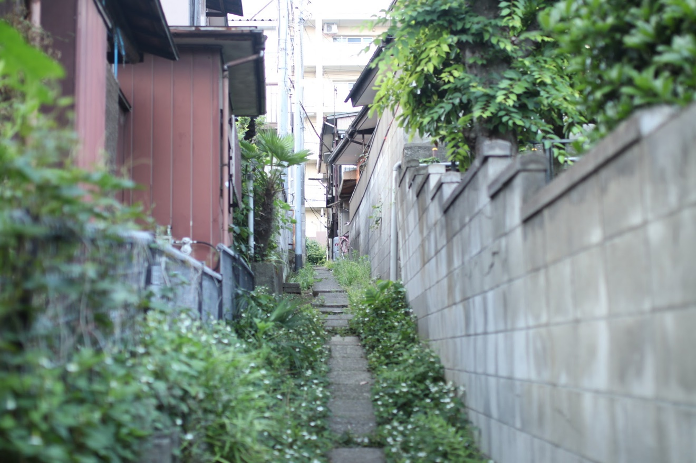
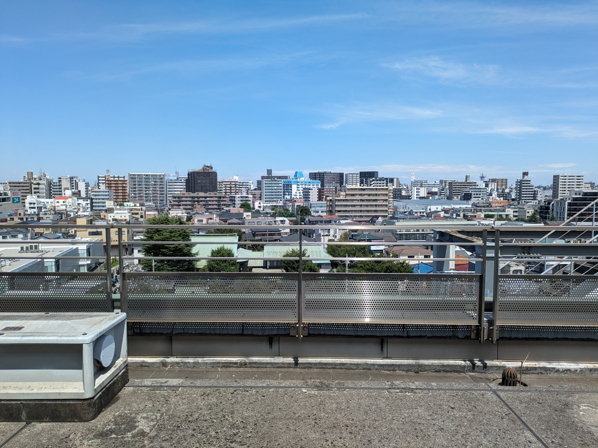
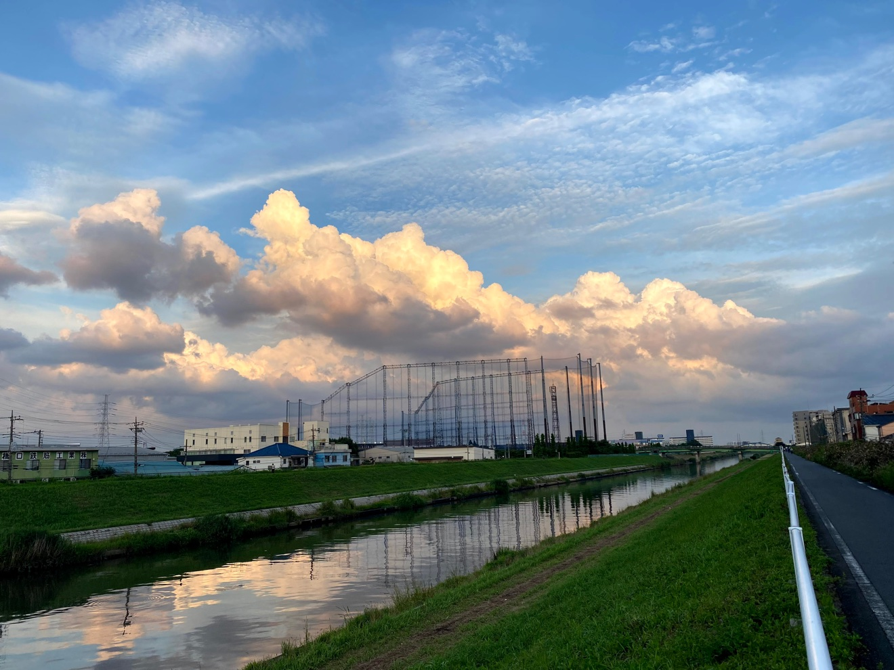

（2026年10月時点）
（過去30日・2026年10月時点）
（過去30日・2026年10月時点）
（2026年10月時点）
プロフィール
About街歩き川口の魅力を発信する、街の住人
暮らす街・川口市を歩いて回り、Instagram（@freddiefujiwara）で地元のお店を紹介するリールを投稿しています。 飲食店を中心に、理容店やリラクゼーションまで、実際に足を運んだお店だけを紹介するのがこだわりです。
紹介したお店はGoogleマイマップ「川口を歩くQAエンジニアマップ」にまとめ、誰でも巡れるように公開しています。 また楽天ROOMでは、実際に買ってよかったもの・使ってよかったものを置いています。
仕事QAエンジニアとして働いています
平日は、ソフトウェアの品質保証（QA）に携わるエンジニアとして働いています。 職歴・資格などの詳しいプロフィールは LinkedIn にまとめています。

- 名前
- 藤原史和（ふじわら ふみかず）
- 拠点
- 埼玉県川口市
- 出身
- 山口県
- 関心
- 街歩き／サイクリング／カフェ巡り／中国語学習
活動・発信
ActivitiesInstagram@freddiefujiwara
川口市のお店をめぐる街歩きリールが中心。自然体で、実際に訪れたお店の空気感をそのまま届けます。
川口を歩くQAエンジニアマップGoogleマイマップ
リールで紹介した川口のお店26件をレイヤー分けして公開中。飲食店21件、理容・サロン4件、リラクゼーション1件。下に地図も埋め込んでいます。
Googleマップの口コミローカルガイド レベル8
実際に訪れたお店の口コミをGoogleマップにも投稿しています。口コミの一覧はプロフィールページから見られます。
楽天ROOM「藤原史和｜川口を歩くQAエンジニア」
ミニマリストなので、持ち物のほとんどをここに掲載しています。実際に買ってよかったもの、使ってよかったものだけを置いています。Instagramと同じ人が運営しています。
ブログfreddiefujiwara.com/blog
日々の記録と、川口歩きのメモ。
最新のリール
Instagramで全て見る ↗Instagram（@freddiefujiwara）で公開中の直近3本です。そのまま再生できます。
Instagramで見る ↗
Instagramで見る ↗
Instagramで見る ↗
川口を歩くQAエンジニアマップ
Googleマップで開く ↗リールで紹介した川口のお店26件をまとめた、Googleマイマップです。地図のまま拡大・移動して使えます。
飲食店21件・理容サロン4件・リラクゼーション1件をレイヤー分けしています。各ピンの詳細にはリールのリンクと紹介文が入っています。


川口市の情報交換
川口のお店の方や、川口に暮らす方と情報交換したいです。 「こんなお店ができたよ」「この通りならここがおすすめ」といった川口の情報がありましたら、 InstagramのDMからお気軽にご連絡ください。街歩きの仲間も歓迎です。
InstagramのDMで連絡する